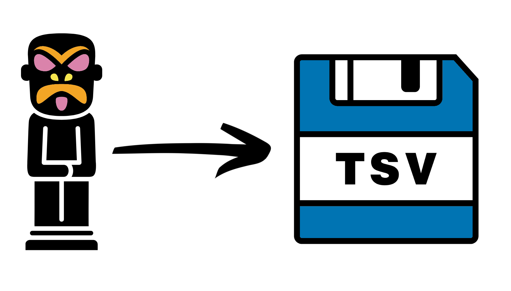

Chapter 2 Exporting Artifacts

Artifact files are very useful when carrying out analysis in QIIME2. However they are impossible to use (I think) with anything outside of QIIME2. Therefore it can be very useful to know how to export data out of Artifact files.
This section will show how to export various different artifact files into text files. However, for some data types they must be converted into a BIOM file first.
2.1 BIOM files
BIOM stands for BIological Observation Matrix. BIOM files generally contain abundance tables. These files are not human-readable but can be used with certain programs. Here we will only manipulate them in such ways to get the text files we need.
For more information on the BIOM format please see: https://biom-format.org/
We will be using the command biom convert to convert BIOM files to TSV (Tab Separated Value) files. For more info on this please see: https://biom-format.org/documentation/biom_conversion.html
2.2 Setup
First copy a new directory that will contain all the QIIME2 output you need and then change directory to it.
cp -r /pub39/tea/matthew/NEOF/16s_workshop/16s_export ~
cd ~/16s_exportBefore we start exporting it is best to make a few directories.
mkdir export
mkdir qiime2_exports
mkdir final_exportsexport: This directory is where we will point the variousqiime tools exportcommands. You can only specify an output directory for this command and the command will give the exported file very generic names. This makes it very easy to overwrite files when using this command.qiime2_exports: For some of the exported files we will move and rename them fromexportto this directory. This is an temporary directory for files we will not want at the end (mostly BIOM files).final_exports: This directory will contain the final exported files we would generaly want to keep.
2.3 Abundance table export
First we will export our ASV abundance table. We will have to convert the BIOM file produced by QIIME2 to a TSV file.
Export the table to a directory. This will create a BIOM file called feature-table.biom.
qiime tools export --input-path table-dada2.qza --output-path exportMove the created file whilst renaming it.
mv export/feature-table.biom qiime2_exports/ASV_table.biomFinall we will use biom convert to create our TSV file.
biom convert \
-i qiime2_exports/ASV_table.biom \
-o final_exports/ASV_table.tsv \
--to-tsvThe option --to-tsv (or alternative) must be provided or the command will not run and only complain.
Use a text viewer/editor of your choice to inspect the final file. Make sure to do this for all the files in this tutorial.
2.4 Taxonomy info export
Exporting the taxonomy info.
qiime tool export --input-path taxonomy.sklearn.qza \
--output-path export
#Move the produced tsv file to the final_exports directory
mv export/taxonomy.tsv final_exports2.5 Representative sequences export
qiime tools export --input-path rep-seqs-dada2.qza \
--output-path export
#Move and rename the produced fasta file
mv export/dna-sequences.fasta final_exports/ASV_rep_seqs.fasta2.6 Phylogenetic tree export
The below export the specified phylogenetic tree into a newick format file. For more info on the Newick format please see: https://en.wikipedia.org/wiki/Newick_format
qiime tools export --input-path rooted-tree.qza \
--output-path export
#Move and rename the exported newick file
mv export/tree.nwk final_exports/fasttree_rooted_tree.nwk2.7 Export ASV table with taxonomy
This step will produce a TSV file containing the ASV abundance table with the last column containing the taxonomy assignment of the ASV.
To carry out this step you will need the BIOM format produced in the abundance table export and the exported taxonomy file.
First we create a new BIOM file which contains the taxonomy information
biom add-metadata \
--input-fp qiime2_exports/ASV_table.biom \
--observation-metadata-fp export/taxonomy.tsv \
--output-fp qiime2_exports/ASV_table.tax.biomNow we export the newly created BIOM file. We will need to include option --header-key taxonomy to include the taxonomy info in the newly TSV file.
biom convert \
-i qiime2_exports/ASV_table.tax.biom \
-o final_exports/ASV_table.tax.tsv \
--header-key taxonomy \
--to-tsv2.8 Export rarified table
qiime feature-table rarefy --i-table table-dada2.qza --p-sampling-depth 56844 --o-rarefied-table table-dada2.rarefied_56844.qza2.9 Export genus table
qiime taxa collapse --i-table ../table-dada2.rarefied_56844.qza --i-taxonomy ../taxonomy.sklearn.qza --p-level 6 --o-collapsed-table table-dada2-order.rarefied_56844.qza